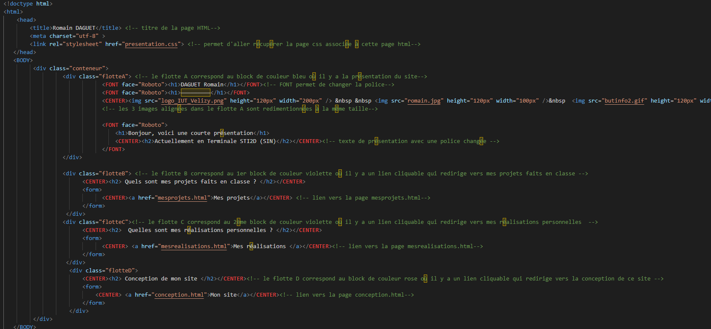
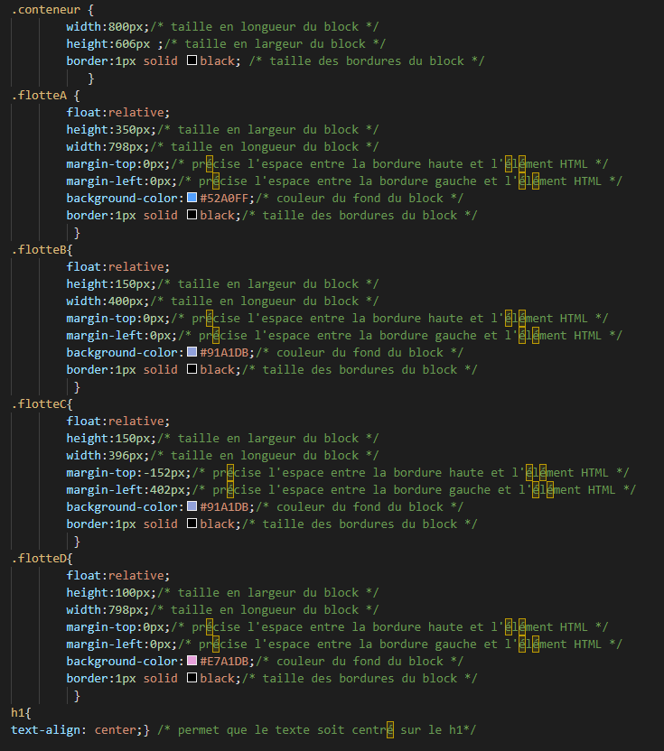

_____________
Conception de mon site
_____________
Pour ce site, j'ai utilisé :
- Visual Studio pour écrire mon code :
Il permet de détecter les différents types d'instructions grace aux couleurs.
Il permet aussi d'indenter les instructions pour plus de clareté.
Enfin, sur le web il est indiqué qu'il est beaucoup utilisé par les développeurs
- Github pour le publier
Présentation de la page principale du site :
- J'ai créé un bloc principal avec une feuille de style.
- Dans ce bloc principal, j'ai ajouté 3 sous-blocs.
- Dans chaque sous-bloc, j'ai mis un titre et un lien qui redirige vers une autre page avec une autre feuille de style
Voici quelques images de mon code :
Screen du code HTML de la première page du site :

Screen du code CSS de la première page du site :
